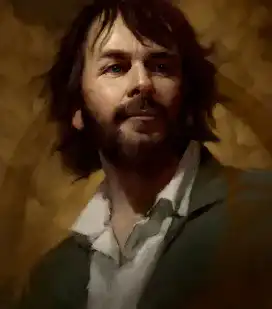
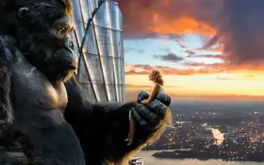
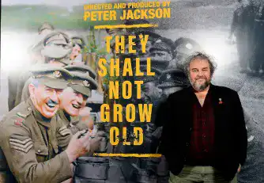

Cinéplique

Peter Jakson
Avatar de Peter Jakson
Peter Jackson, Le maître du cinéma
Peter Jackson est un réalisateur néo-zélandais qui a adapté au cinéma l’univers de J.R.R. Tolkien avec les trilogies du Seigneur des Anneaux et du Hobbit. Il a su créer des films fidèles aux livres et spectaculaires, en utilisant des effets spéciaux révolutionnaires et des acteurs talentueux. Mais comment est-il devenu l’un des réalisateurs les plus célèbres et les plus rentables de l’histoire du cinéma ?
Ses débuts : du gore au drame
Peter Jackson est né en 1961 à Wellington, en Nouvelle-Zélande. Il découvre sa passion pour le cinéma dès son enfance, en réalisant des courts-métrages avec la caméra Super 8 de ses parents. Il est inspiré par le film King Kong, qu’il voit à l’âge de neuf ans.
Image de Peter Jackson en 2023
Il se fait remarquer au Festival de Cannes et devient un réalisateur culte pour les amateurs de gore. Il change de registre en 1994 avec Créatures célestes, un drame qui raconte l’histoire d’une amitié passionnelle entre deux adolescentes qui bascule dans le meurtre. Le film est salué par la critique et lui permet de se faire connaître à Hollywood.
La consécration : Le Seigneur des Anneaux
Peter Jackson a toujours rêvé d’adapter au cinéma le roman Le Seigneur des Anneaux de J.R.R. Tolkien, qu’il a lu à l’âge de 18 ans. Il propose son projet à Miramax, qui accepte de le financer à condition qu’il réduise l’histoire en deux films. Peter Jackson refuse ce compromis et cherche un autre studio pour produire sa trilogie. Il convainc New Line Cinema, qui lui donne carte blanche pour réaliser son ambition.
Le premier film, La Communauté de l’Anneau, sort en 2001 et rencontre un succès phénoménal. Il est suivi par Les Deux Tours en 2002 et Le Retour du Roi en 2003, qui battent tous les records au box-office et remportent de nombreux prix, dont 11 Oscars pour le dernier film. La trilogie du Seigneur des Anneaux devient l’une des plus grandes œuvres cinématographiques de tous les temps.
Le projet King Kong
La suite : King Kong, Le Hobbit et au-delà Après le triomphe du Seigneur des Anneaux, Peter Jackson réalise son rêve d’enfant en adaptant King Kong en 2005. Il s’agit d’un remake du film de 1933, avec Naomi Watts, Jack Black et Adrien Brody. Le film est un succès commercial et critique, et reçoit trois Oscars pour les effets visuels, le son et le montage sonore.
Image du film King Kong de Peter Jackson
La suite : Le Hobbit et au-delà
En 2012, Peter Jackson revient à l’univers de Tolkien avec la trilogie du Hobbit, adaptée du roman éponyme qui raconte les aventures de Bilbon Sacquet, l’oncle de Frodon. Le projet devait initialement être réalisé par Guillermo del Toro, mais celui-ci abandonne pour des raisons de planning. Peter Jackson reprend alors les rênes du projet, qu’il décide de diviser en trois films : Un voyage inattendu en 2012, La Désolation de Smaug en 2013 et La Bataille des Cinq Armées en 2014. La trilogie du Hobbit reçoit un accueil plus mitigé que celle du Seigneur des Anneaux, mais elle reste un succès commercial et technique.
Autres projets
Depuis, Peter Jackson fait des projets plus personnels et moins chers. Il fait un documentaire sur la Première Guerre mondiale en 2018, avec des images d’archives restaurées et colorisées. Il fait aussi une série documentaire sur les Beatles, qui doit sortir en 2021.
Image du film They shall not grow old
Conclusion
En conclusion, Peter Jackson est un réalisateur qui a marqué l’histoire du cinéma avec ses films fantastiques et épiques. Il a su créer des univers magiques et immersifs, en utilisant des technologies innovantes et des acteurs charismatiques. Il a aussi su rester fidèle à sa passion et à sa vision artistique, malgré les contraintes et les pressions du milieu. Peter Jackson est un réalisateur qui nous fait rêver, frissonner et voyager.